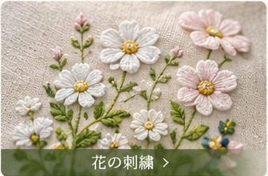
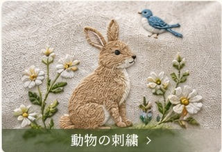
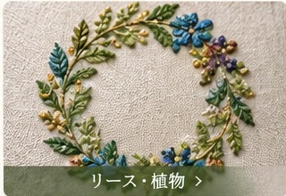
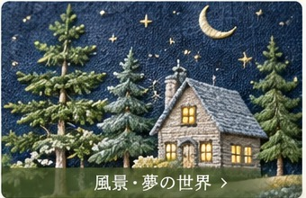

01 / FLOWER
野の花をあつめて
やわらかな色の花々
WELCOME TO MY FOREST
刺繍ミシンと過ごす時間が好きで、花や動物、季節の風景をモチーフに作品をつくっています。
布の上に少しずつ色が重なり、ひとつの絵になっていく。その楽しさと、糸ならではの温もりを紹介する小さなホームページです。
EMBROIDERY COLLECTION
お気に入りの風景を、ひと針ずつ。

やわらかな色の花々

動物たちの小さな物語

葉と実を重ねた植物模様

静かな夜のファンタジー
MADE WITH THREAD
図案を考え、糸色を選び、ミシンを動かす。少しずつ布に表情が生まれていく制作の時間も、作品の大切な一部です。
ギャラリーをもう一度見る →THANK YOU FOR VISITING
Welcome to my embroidery forest.